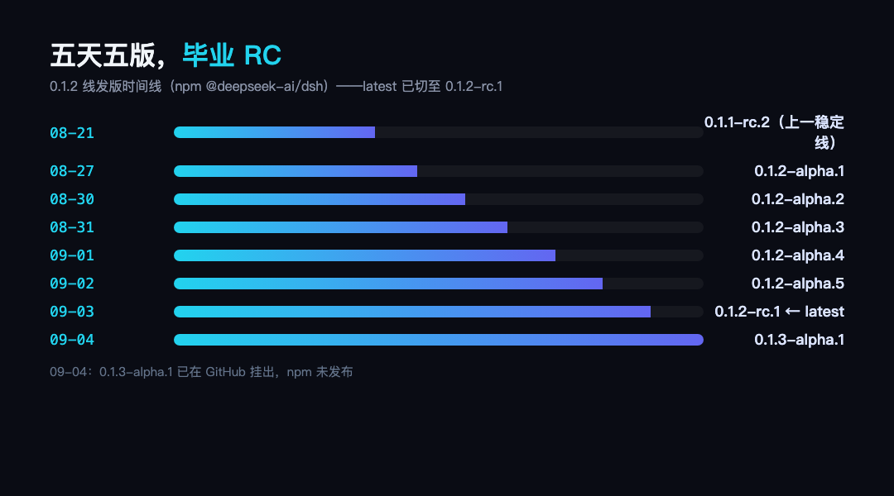
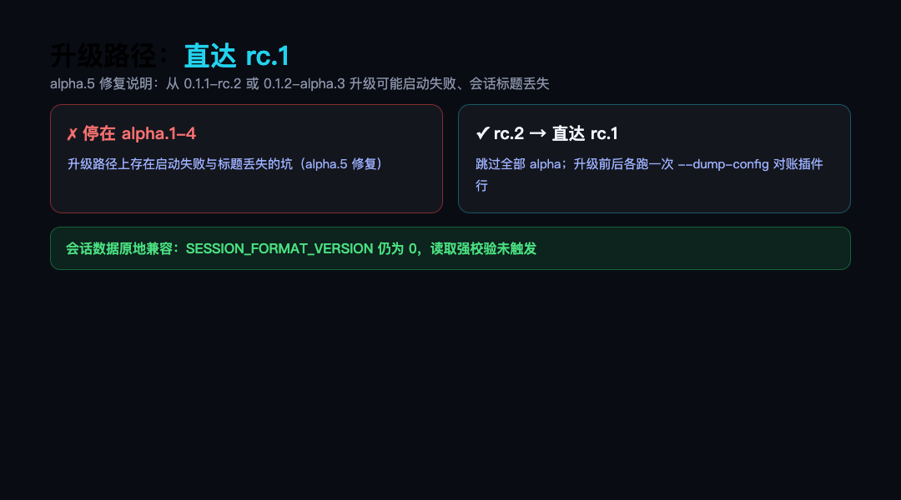
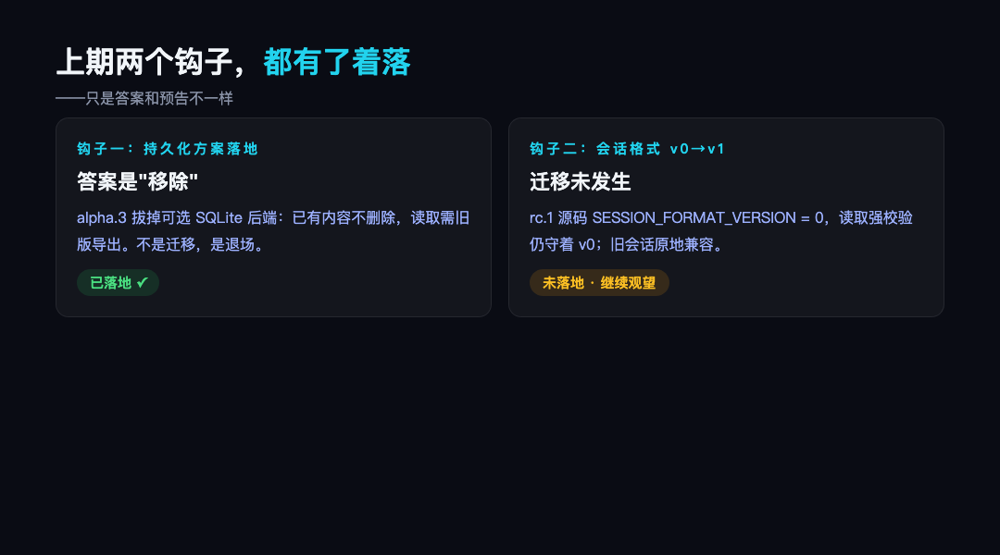
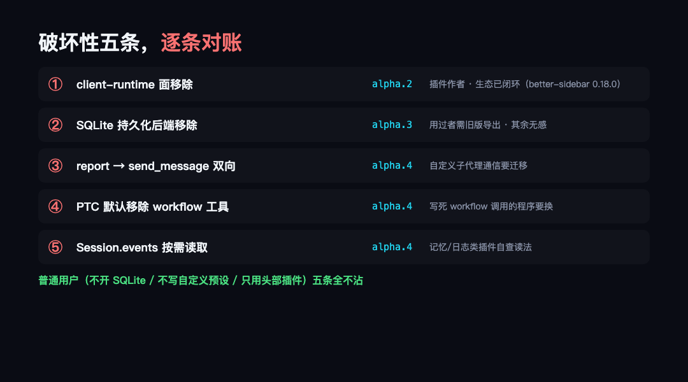

上一篇前瞻盯 dsh 更新线的时候，0.1.2 线还停在 alpha.1，结尾留了两个观察点：持久化方案的落地方式，和会话格式 v0 到 v1 的迁移。半个月过去，答案都出来了，而且比预告的更有戏剧性——0.1.2 线从 8 月 27 日到 9 月 3 日连发五版（alpha.1 → alpha.2 → alpha.3 → alpha.4 → alpha.5 → rc.1），五天五版直接毕业 RC；

图：0.1.2 线发版时间线：五天五版，latest 已切 rc.1
npm 的latest 标签已经切到 0.1.2-rc.1——从此默认安装 dsh 的每个人拿到的都是 0.1.2 线；9 月 4 日 GitHub 上连 0.1.3-alpha.1 都挂出来了。作为对照：上一条稳定线 0.1.1 的 rc.1 到 rc.2 之间隔了多久没有公开数据可查，但 0.1.1-rc.2（8 月 21 日）到 0.1.2-alpha.1（8 月 27 日）隔了六天，而 0.1.2 线内部把节奏压到了一天一版。发版节奏本身就是一个信号：项目在预发布期进入了高强度收尾模式。这一篇把五版的官方发布说明逐条对账、和 alpha.1 基线源码做对比（alpha.1 到 rc.1：656 个 commit、300 个文件变更），回答三个问题：升级路径怎么走、谁的东西会坏、上期埋的钩子落地了没有。
● ● ●
● ● ●
先把结论放在最前面：还在 0.1.1-rc.2 的用户，直接升 0.1.2-rc.1，不要在 alpha 版本停留。
理由在 alpha.5 的修复说明里写得明明白白：
修复从0.1.1-rc.2或0.1.2-alpha.3升级时，应用可能启动失败或者会话列表标题丢失的问题
这条修复反向暴露了一个事实：alpha.1 到 alpha.4 之间存在升级路径上的坑——从 rc.2 升上去可能启动失败，会话标题可能从列表里消失。这些问题在 alpha.5 修完，rc.1 是修完之后的第一个候选版。所以升级路径只有一条是稳的：rc.2 → 直达 rc.1，跳过全部 alpha。
升级前后各跑一次 --dump-config 对账，是上期说过的老办法：升级前存一份插件挂载清单，升级后 diff 一眼，插件行有没有少、顺序有没有变，一目了然。会话数据本身不用担心：rc.1 源码里会话读取依然带强校验——packages/core/session/src/index.ts 第 102 行，record.version !== SESSION_FORMAT_VERSION 就直接抛错，而 SESSION_FORMAT_VERSION 的值仍是 0。上期预告的 v0→v1 迁移没有发生，旧会话原地兼容，升级不动你的历史数据。

图：升级路径：rc.2 直达 rc.1，中间 alpha 是坑
图：升级路径：rc.2 直达 rc.1，中间 alpha 是坑
● ● ●
● ● ●
上期结尾说"持久化词汇改名绑定会话格式 v0 到 v1 的迁移，那个 PR 落地才需要全体对照检查"。现在可以宣布：那个迁移没有落地，取而代之的是一个更干脆的动作。
alpha.3 的"其他变更"一栏：
移除可选的 SQLite Session 持久化后端；已有内容不会删除，请使用旧版本导出
SQLite 持久化是 rc.8 时期引入的可选实验能力——上期对账时提过，rc.8 时期还出过"SQLite 数据结构不兼容"的存储层变更。把时间线串起来看：引入（rc.8）→ 存储结构不兼容变更（rc.8 时期）→ 整个后端移除（alpha.3），一段存储层从出生到退场的完整历史，寿命不到一个月。这次不是改名不是迁移，是直接拔掉。官方的处理很克制：已有数据不会删除（你的文件还在原地），但要读出来得用旧版本导出。用没用过这个功能是分水岭——没用过的用户对这条完全无感，用过的需要安排一次导出。
至此持久化这条线的信息完整了：SQLite 后端（rc.8 引入）→ 移除（alpha.3）→ 会话格式版本恒为 0（rc.1 源码）→ v0→v1 迁移（未发生，继续观望）。上期那句"那个 PR 落地才需要全体对照检查"的判断依然成立，只是落地时间继续往后推了。

图：上期两个钩子的兑现状态
图：上期两个钩子的兑现状态
● ● ●
● ● ●
alpha.1 到 rc.1 共 656 个 commit、300 个文件变更。官方发布说明里对用户有实际影响的破坏性变更，一共五条，按影响面从大到小排：
① client-runtime 面移除（alpha.2）。 @deepseek-ai/dsh-client-runtime 这个内部面被官方移除。这不是理论影响——生态里立刻有实锤：better-sidebar 曾因此暂时无法挂载，直到它发布 0.18.0 版完成适配才回归（dsh-web 全家桶随后把它重新拼回聚合清单）。生态的实际应对也值得记一笔：better-sidebar 的处理方式是发一个钉死版本号的正式版（0.18.0，9 月 3 日发布）完成适配，聚合它的全家桶项目随后更新装配清单把它拼回去——从宿主移除内部面，到插件完成适配、聚合项目跟进，整个链条在三天内闭环。给所有依赖宿主内部面的插件作者提了醒：内部面随时会消失，靠它吃饭的插件要跟紧版本。
② SQLite 持久化移除（alpha.3）。 影响面如上节：只用过默认持久化的无感，显式开过 SQLite 后端的要先导出。
③ report 工具退场，send_message 双向登场（alpha.4）。 父 Agent 与可持续子 Agent 的后续消息传递从单向 report 改为双向 send_message。这一条要和 alpha.1 的"子代理可授权自选模型"连起来看：子代理从一次性打工人升级成了可持续对话的协作者，单向汇报的词汇自然要换成双向消息。自定义过子代理通信流程的插件和预设要迁移；纯用户无感，但用惯了"派活-收报告"节奏的人会感觉到交互模型变了。
④ Web PTC Mode 默认不再提供通用 workflow 工具（alpha.4）。 依赖 workflow 工具的 PTC 程序会找不到它。和上期对账过的"code→ptc 改名"一样，这类变化影响的仍是显式引用了工具名的配置和程序，普通对话流不受影响。区别在于上次是改名（换个拼写就行），这次是默认不再提供——写死了 workflow 调用的 PTC 程序不是改个名字能解决的，要么换工具要么显式把工具加回来。
⑤ Session.events 按需读取（alpha.4）。 会话事件日志改成按需加载。这是性能优化，但语义变了：读 agent.session.events 的插件（记忆类、日志类插件是重灾区）不能再假设事件全量在内存里。典型的受影响方是记忆类插件——它们普遍在会话结束时读全量事件做提取。按需读取意味着"拿到的可能是分页句柄而不是数组"这类语义变化，适配过的头部插件没出问题，自研插件的作者要自查一眼自己的读法。
五条里，①影响插件作者，②影响少数配置用户，③④影响写过自定义工具引用的人，⑤影响读会话数据的插件。普通用户——不开 SQLite、不写自定义预设、只用头部插件——五条全都不沾。这也是把破坏性变更逐条对账的意义：怕的从来不是变更本身，是不知道变更烧没烧到自己。

图：破坏性五条与影响面对照
图：破坏性五条与影响面对照
● ● ●
● ● ●
上期对账过"插件树 78 条涨到 86 条是纯增量"。这期再把 alpha.1 和 rc.1 的 base 清单对一遍：86 条对 86 条，零增减——整个 0.1.2 线的破坏性变更全部发生在代码面，没有一条动插件树。唯一的结构变化是 examples 目录移出仓库，那是示例代码，不影响任何安装。
也就是说，上一期结论"挂载格式不变，头部插件零改动"在 0.1.2-rc.1 上依然成立。变的不是插件体系的形状，是宿主内部的面和工具词汇。
● ● ●
● ● ●
五版连发不只是修修补补，rc.1 的发布说明汇总了这批变化里值得用户感知的部分：
web_search 失败时报告实际端点和错误明细，不再只给一句失败（alpha.2）read_image 能识别没有扩展名的图片附件（alpha.3）● ● ●
● ● ●
rc.1 的发布说明里官方推荐了一个社区项目：oh-my-dsh 的 dsh-plugin-upgrade-skill——帮插件作者随 dsh 版本升级插件代码的 skill，发布说明同时注明 oh-my-dsh 与 DeepSeek AI 无隶属关系。官方在发布说明里给第三方的插件迁移工具导流，这个动作本身说明：0.1.x 预发布期的版本迁移已经成了生态的公共成本，官方选择承认它而不是掩饰它。
对插件使用者的推论也顺理成章：挑插件时，更新频率和适配声明比 star 数更重要。0.1.x 阶段，一个三个月没动的插件，比一个功能少但周更的插件风险大得多。
● ● ●
● ● ●
判断自己装的插件受不受这批变更影响，不用读源码，三步：
第一步看声明。 插件的 package.json 里如果声明了 engines.dsh，直接对照自己的版本——声明了 0.1.2 线的就是适配过的，没声明的继续第二步。第二步看更新时间。 9 月 3 日（rc.1 发布）之后发过版的，作者大概率已经对着这批变更修过；上次更新停在 8 月 27 日之前的，按风险对待。第三步跑对账。 升级前后各一次 --dump-config，插件行没少、顺序没变，剩下的就是实际用一轮看功能是否如常。
头部生态的适配情况目前是好的：侧边栏工作台、聚合全家桶都已声明适配 0.1.2 线，市场类插件要求 rc.6 以上天然覆盖。长尾的、单文件的小插件才是这批变更真正可能的受害者。
● ● ●
● ● ●
01节奏：0.1.2 线五天五版毕业 RC，npm latest 已切到 0.1.2-rc.1，0.1.3-alpha.1 也已挂出——预发布期的发版节奏在加快。
02升级：rc.2 用户直达 rc.1，跳过全部 alpha（alpha.5 修复了中途升级的启动失败和标题丢失）；会话格式版本恒为 0，旧会话原地兼容。
03兑现：上期两个钩子全部有着落——持久化的答案是 SQLite 后端整体移除（用过的要先导出），会话格式 v0→v1 迁移未发生、继续观望。
04破坏性五条（client-runtime 移除、SQLite 移除、report→send_message、PTC workflow 工具默认移除、Session.events 按需读取）条条指向插件作者和自定义配置，普通用户五条全不沾；base 插件树 86 条零增减。
下一篇继续盯：0.1.3-alpha.1 已经挂出——通用文件上传、出站请求遵循 HTTP_PROXY、macOS Intel 版 runtime wheel、PTC 工具卡直接渲染图片，等它走出 alpha 再对一次账。
源码地址：github.com/deepseek-ai/deepseek-harness（npm：@deepseek-ai/dsh，latest = 0.1.2-rc.1）